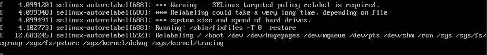
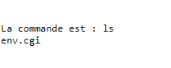

Se linux¶
Introduction¶
SE Linux se base sur la sécurité de type MAC (Mandatory Access Control).
La commande sestatus permet d'obtenir des informations concernant la protection de SE Linux

SE Linux possède 2 modes :
- Enforcing : cette option bloque et log
- Permissive : cette option laisse tout faire et log
Pour forcer le mode permissive on utilise la commande :
setenforce 0
setenforce Permissive
Pour forcer le mode enforcing on utilise la commande :
setenforce 1
setenforce Enforcing
Chaque fihcier et prossesus ont un label de sécurité (security context) avec une forme :
user:role:type(files)/domaine(processus):mls
Cette forme peut-etre lue avec les commandes :
ls -Z /etc/hosts
et
ps -Zfax
Info
Z pour lister les labels
f affiche sous forme d'arbre
a pour lister les porcessus des autres utilisateurs
x affiche les processus qui n'ont pas de terminal de controle
Lister les règles d'une stratégie :
chcon -R -t
Info
-R pour recurcive
-t pour le type
Manipulations¶
Mise à zéro de audit.log¶
Arret du service auditd :
systemctl stop auditd
Si le service ne veux pas être arrété par le biais de systemctl, utilisez :
service auditd stop
Supprimez le fichier \var\log\audit\audit.log
rm \var\log\audit\audit.log
On regarde ensuite les labels de sécurité du fichier :
ls -lZ \var\log\audit\audit.log
Mise à zéro de SElinux¶
Reconstitution des labels de sécurité¶
Danger
La reconsititution des labels de sécurités concerne tout les fichiers. Si des labels de sécurité ont été modifiés manuellement, ceux-ci seront réinitialisés par la reconsititution sauf si ceux-ci ont été rentrés dans les configurations persistantes.
Pour reconstruire les labels de sécurité :
restorecon -R /
Pour reconstruire les labels de sécurité au prochain démarrage :
touch /.autorelabel
Au redémarrage on peut observe le relabel :

Les templates sont stocker dans /etc/selinux/targeted.

Exemple d'un fichier (ici /etc/selinux/targeted/contexts/systemd_contexts) :
runtime=system_u:object_r:systemd_runtime_unit_file_t:s0
Travail sur un serveur FTP¶
Abstract
Installation du serveur : vsftpd
On observe ensuite les labels de sécurité sur les dossiers /var/ftp et /var/ftp/pub.
On remmarque que sur les labels de sécurité, on retrouve un label public_content_t.
On demarre le service avec systemctl start vsftpd.
Note
Le firewall bloque peut-être les connexion au ftp via le navigateur (ftp://ipmachine).
On active le service firewall FTP :
firewall-cmd --add-service=ftp
On se connecte avec un client ftp et une session comme root. On obteint un succès de connexion.
On s'intérresse maintenant au fichier de configuration /etc/vsftpd/vsftpd.conf.
On retrouve la ligne :
anonymous_enable=NO
La ligne ci-dessus doit être commentée afin de pouvoir autoriser les connexions anonymes.
Warning
Il faut restart le service afin de prendre en compte le changement de configuration.
On va créer les dossiers pour déplacer l'attache du ftp dans /home/ftp/pub
Info
On peut utiliser mkdir -p avec l'option -p qui permet de créer les parents du dossier voulu.
On ajoute une ligne dans /etc/vsftpd/vsftpd.conf pour lier le ftp dans le dossier créer précédement :
anon_root=/home/ftp
On regarde les labels de séurité sur le dossier ls -lZ /home/ftp/
drwxr-xr-x. 2 root root unconfined_u:object_r:user_home_t:s0 4096 27 janv. 09:34 pub
Info
A partir de redhat 9, on à maintenant accès au FTP .
On cherche à lister les différents modules de SE Linux avec la commande avec l'installation de tools:
dnf -y install setools-console
On va lister tout les règles d'autorisations :
sesearch --allow -s ftpd_t | grep " ftpd"
Et on obteint une information concernant la règle ci-dessus :
1 2 | |
On peux filtrer aussi avec :
sesearch --allow -s ftpd_t -t user_home_t
On obteint :
1 2 3 4 5 6 7 8 9 10 11 12 13 14 | |
Exploration de SElinux avec les ports¶
Installation de apache avec le package httpd.
Une fois l'installation terminée, on modifie le port de Apache dans le fichier de configuration (/etc/httpd/conf/httpd.conf) :
Listen 8888
Warning
Pour activer la modification, il faut redémarrer le service ou le démarrer si cela n'a pas été fait à l'installation
Pour redémarrer :
systemctl restart httpd
Pour démarrer le service :
systemctl start httpd
Avec le restart, on obteint une erreur de configuration :
1 2 | |
Si on observe les logs avec journalctl -u httpd | tail, on remarque que le port 8888 provoque un problème :
1 2 3 4 5 6 7 8 | |
On cherche aussi dans /var/log/audit/audit.log avec la commane grep avc /var/log/audit/audit.log
1 2 | |
On utilise audit2 pour comprendre le problème avec la commande (grep avc /var/log/audit/audit.log | tail -n -1 | audit2why):
1 2 3 4 5 6 | |
Puis on cherche de savoir comment résoudre ce problème avec audit2 avec la commande (grep avc /var/log/audit/audit.log | tail -n -1 | audit2allow):
1 2 3 4 | |
Danger
Attention cela provoque une faille de sécurité. Nous allons donc passer par semanage.
Pour lister tout les ports avec semanage (semanage port -l | grep http ) :
1 2 3 4 5 | |
Ici on peut découvrir tout les ports, on modifie alors le label http pour autoriser le port 8888 :
semanage port -a -t http_port_t -p tcp 8888
Si on observe les ports, on le retrouve dans la liste :
1 2 3 4 5 | |
On redémarre alors le service httpd et on obteint aucune erreurs.
Les booléens dans SElinux¶
Prérequis pour réaliser cette activité
Il est nécéssaire d'avoir un serveur web (par exemple httpd autrement dit apache).
Ici nous utilisons le serveur web précédement installé et sur le port 8888. Normalement, le port par défaut est 80.
Création d'un fichier /var/www/cgi-bin/env.cgi contenant :
1 2 3 4 5 | |
On rend ensuite le fichier executable pour tout le monde :
chmod 755 /var/www/cgi-bin/env.cgi
Puis on test avec un curl :
curl http://127.0.0.1:8888/cgi-bin/env.cgi
Attention au firewall
Attention le firewall peut bloquer la communication sur le port 8888. Il faut autoriser le trafic sur le port :
firewall-cmd --add-port=8888/tcp
Petite modification du fichier /var/www/cgi-bin/env.cgi pour executer des requetes dans l'URL:
1 2 3 4 5 6 7 | |
Si on test le script dans le navigateur avec la commande curl http://172.19.252.60:8888/cgi-bin/env.cgi?ls:

Danger
Attention, les commandes sont executées avec l'identité du user wwwdata.
Le utlisateur possède donc tout les droits de créations et autres liés à wwwdata.
Pour la sécurité, on va désactiver toutes les executions des .cgi :
getsebool -a | grep http
On désactive alors l'execution des CGI :
setsebool -P httpd_enable_cgi off
Tip
Attention au mode de selinux car si il est en permissive cela laissera actif l'execution des CGI.